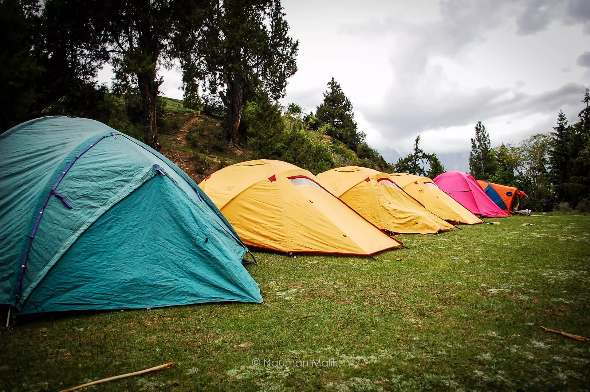
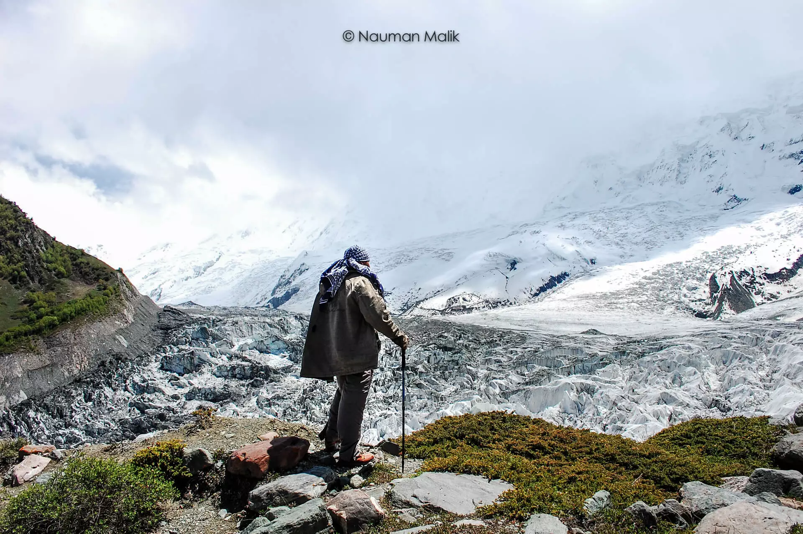

Gilgit-Baltistan has one of the most beautiful sights in the world, and the Rakaposhi mountain is one of them. This mountain comes in the Karakoram Mountain Range and is located in the middle of Bagrote and Nagar Valley.

Rakaposhi is also known as Dumani. Dumani means “Mother of Clouds”. It is the 27th highest mountain in the world and the 12th highest mountain in Pakistan. This mountain range is also the home of some endangered species such as Brown Bear, Wolves, Marco Polo Sheep, and Snow Leopard. The view of Rakaposhi gives a sensational look to its viewers. Its exceptional rise over local terrain attracts the tourists. People can have a view of this beautiful mountain from Karakoram Highway.
Usually, people see it from Karakoram Highway, take some pictures and leave. But a few try to go to the Rakaposhi Base Camp. Rakaposhi Base Camp is in the Minapin Village. This village is located in the Nagar Valley, Gilgit Baltistan. The trek from Karakoram Highway is very easy and is feasible for every age type. If you are to visit and stay at Rakaposhi Base Camp, then it is recommended to start early in the morning.
You will reach Hapakun from Minapin in two to three hours, which is a clean and nice place for camping. The local community is also very friendly with travelers. From Hapakun to the Rakaposhi Base Camp, it will take about 3 to 4 hours. While trekking to Rakaposhi Base Camp, don’t forget to wear sturdy shoes, daypack, weather-proof jackets, and trekking sticks.